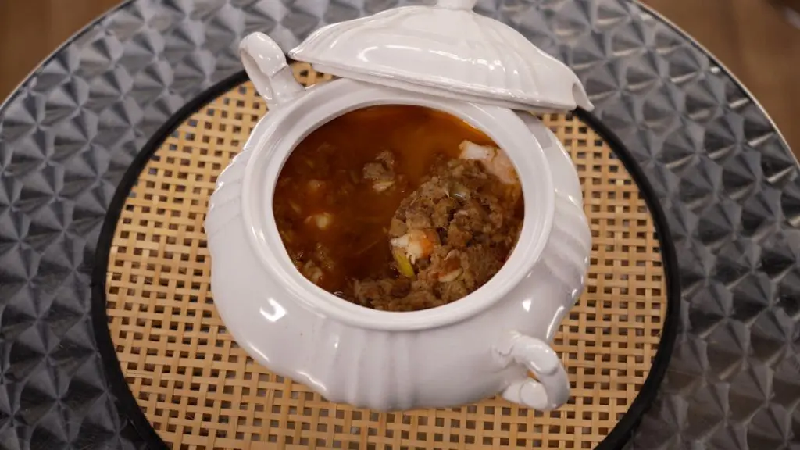

Sopa de merluza y langostinos

Aprende a preparar esta receta de Sopa de merluza y langostinos, por Julius Bienert
Ingredientes
- Pan de hogaza del día anterior laminado
- Langostinos grandes
- Merluza limpia
- Fumet de pescado
- Diente De Ajo
- Cebolla
- Puerro
- Pimiento choricero
- Pimentón dulce
- Cayena
Preparación de la Receta
- Pelamos los langostinos y ponemos las cabezas en un cazo.
- Incorporamos el fumet de pescado y dejamos hervir mientras preparamos el resto de la sopa.
- Ponemos una olla al fuego con aceite de oliva y doramos los ajos, la cebolla y el puerro. Incorporamos el pan cortado en rebanadas y las tostamos durante 4 minutos.
- Agregamos la pulpa de pimiento choricero, el pimentón y la cayena. Rehogamos y cubrimos con el caldo. Cocemos 5 minutos.
- Cortamos los langostinos en trozos y los incorporamos.
- Hacemos lo mismo con la merluza.
- Apagamos el fuego y dejamos que el pescado se cocine con el calor restante de la sopa.
- Servimos la sopa con un trozo de merluza para cada comensal.
Volver